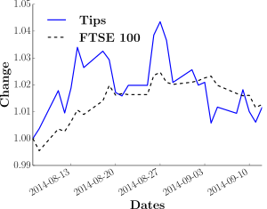

Stock tips vs. trackers
Stock tip performance compared to the FTSE 100.
I compare the growth of shares recommended by the Telegraph against the growth of the FTSE 100, as competing investment strategies. The growth is comparable over the month the code has been running, while the volatility of the Telegraph tips is much higher.
Skills employed: YQL, Python, SciPy, matplotlib, Numpy, nltk, statistics, web scraping, data cleaning, Matplotlib, project design, Linux
A month of FTSE growth compared to the Telegraph tips. The first image and method is at the end of every day, putting a unit of currency in any tips, the comparison the same but in the FTSE 100.
Motivation
I’m comparing the growth of shares tipped by the Telegraph tipster Questor, with the growth of the FTSE 100 index. This is mainly to develop a baseline growth to compare to any models I construct, and also to learn about stock markets and finance, and improve my coding — I hadn't done text handling or web scraping before.
Getting stock prices
The share and index price comes from YQL, a free tool provided by Yahoo to search their data tables, one of which is finance. It required a bit of reverse engineering of the genuine outputs and clever thinking about the Yahoo websites, but that wasn’t too hard. It’s not the best form for doing this, the results needed a bit of cleaning, but I suspect a nicer version of this would be quite expensive.
Comparison methods
The first method is at the end of every day, putting a unit of currency in any tips provided by Questor, the comparison the same but in the FTSE 100. The second is equally dividing a unit of currency over any tips from the previous week, the comparison is the FTSE again. Before plotting, both are normalised to the total money invested (as it varies with time) to allow the signal to be seen over the signal of more money being invested- the unitless ‘Change’ y-axes.
The first method is the simplest I could think of, the second method is something close to what I might do. I suspect there are a wide range of ways of doing this, if I was extending it I'd look them up.
Results
The Telegraph tips and the FTSE shows comparable growth over the time considered, with much higher volatility from the tips. Telegraph share tips don’t seem to be the way to go.
I enjoyed it as a baseline, and YQL seems a sensible way of approaching tests of this sort of investment.